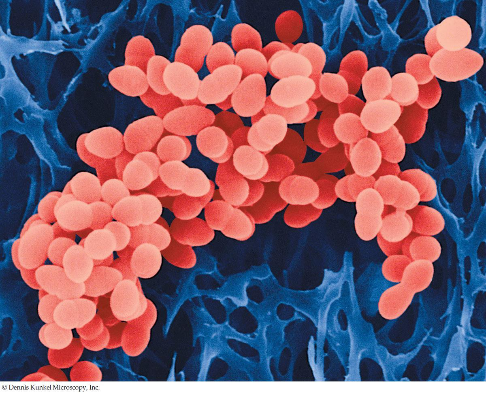

| 10 | From DNA to Protein: Gene Expression |
|
KEY CONCEPTS
10.1 Genetics Shows That Genes Code for Proteins 10.2 DNA Expression Begins with Its Transcription to RNA 10.3 The Genetic Code in RNA Is Translated into the Amino Acid Sequences of Proteins 10.4 Translation of the Genetic Code Is Mediated by tRNAs and Ribosomes 10.5 Proteins Are Modified after Translation |

Although these Staphylococcus aureus cells look like normal bacteria, they have genes for resistance to multiple antibiotics and are difficult to eradicate. Antibiotic-resistant bacteria pose an ever increasing challenge to public health.
|
Humans have more prokaryotic cells on and in their bodies than they have eukaryotic cells of their own. Among the billions of bacteria that inhabit the skin and noses of many people is Staphylococcus aureus. Healthy people can carry this bacterium without symptoms, but sometimes, especially when the immune system has been weakened by age or disease, S. aureus can cause major skin infections and may even enter the body through the nose or a wound site. In these cases, much more serious infections of organs such as the heart and lungs can occur, and may result in death.
Until recently, most S. aureus infections were successfully treated with penicillin and related drugs, including methicillin. These antibiotics bind and inactivate several related enzymes (called penicillin-binding proteins) that are involved in the assembly of bacterial cell walls. Bacteria treated with these antibiotics have defective cell walls, and because of this, new cells cannot survive after cell division. Unfortunately, some S. aureus strains have acquired mutant versions of a penicillin-binding protein that can catalyze the assembly of cell walls in the presence of the antibiotics, thus conferring antibiotic resistance to these strains. The mutant penicillin-binding protein has an altered shape that doesn’t bind the antibiotics. This protein is encoded by the mecA gene, which can be passed from one bacterium to another by bacterial conjugation (see Concept 8.4). At a more general level, the mutant phenotype demonstrates that a gene is expressed as a protein.
By the late 1990s these bacterial strains were being called “superbugs,” with the formal name “methicillin-resistant S. aureus,” or MRSA. The first decade of the new millennium saw a dramatic rise in MRSA infections. At first, most cases occurred in hospitals and nursing homes, but more recently MRSA has occurred in communities as well. Resistant strains have a selective advantage because of the extensive use of antibiotics in health care. With close to 100,000 serious MRSA infections and 20,000 deaths in the United States each year, more people are dying from MRSA than from AIDS.
MRSA can be treated if detected early. Antibiotics such as tetracycline, which targets bacterial protein synthesis, can be effective in some strains. But there is reasonable concern that MRSA may become resistant to these antibiotics as well.
How do antibiotics target bacterial protein synthesis?